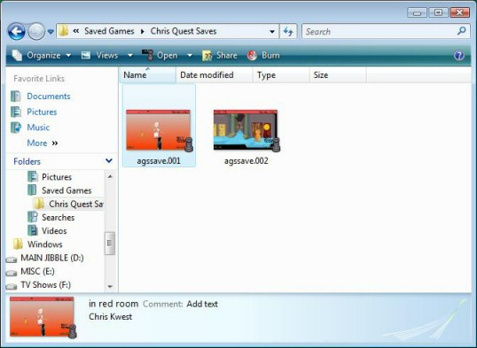
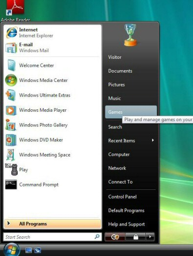
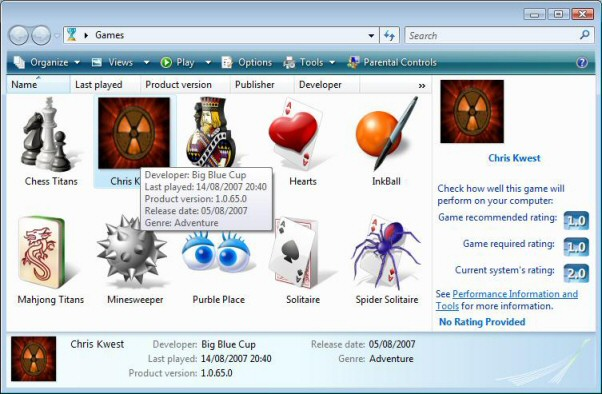

AGS has the ability to integrate with Windows in two ways. Firstly, it can be set up to launch save games directly from explorer when the player double-clicks them; and secondly, in Windows Vista and later, AGS can integrate with the Game Explorer feature.
Optionally, AGS can set up Windows Explorer so that you can double-click on a save game file to directly launch the game and continue from where you left off.
Setting it up
In order to enable this, open the General Settings pane, and look for the "Saved Games" section. Here, there is an option called "Enhanced Save Games". If you switch this on, then AGS will enable the integration with Windows Explorer.
To make this work, you need to set the Save Game File Extension setting to a file extension. This is how Windows will identify the save game files, and you must supply an extension of between 5 and 20 characters in length ("DemoQuestSave" would be an appropriate extension for Demo Quest, for example).
By changing these settings, your game's saved game filenames will change, and therefore you will lose access to any existing saved games.
Extra features for Windows Vista and later
If the player is running Windows Vista or later versions, then this feature will also allow them to see the save game description and screenshot (if enabled) in the Explorer preview window:

Enabling the integration
Once you've built the game, the integration won't be enabled immediately. If you want to use this feature, you'll need to distribute your game in an installer rather than a zip file, because there's an extra step you need to run after installation to set up the association.
In your installer, you need to run the game executable with the special parameter -registergame. When you do this, AGS will create the necessary associations in Explorer to get the feature working. If it is successful, it will not display any messages.
You can manually test this by creating a shortcut to your game EXE file, and modifying it to add -registergame to the end of the command line. Then, run the shorcut and the associations should be created for you.
For un-installing, run the game EXE again but with the -unregistergame parameter. This will cause AGS to remove the associations from the player's system.
Windows Vista and later versions have a feature called the Game Explorer, which is a special folder on the Start Menu that lists all the games installed on the user's system and provides easy shortcuts to play them.
AGS is now able to add your games to this list. However, in order to do so you would need to distribute your game using an installer rather than just in a plain zip file, since you need to tell AGS to add the game to the list at install-time.

Enabling Game Explorer support
Open the General Settings pane in the editor. If you scroll down to the bottom of the list, you'll find a section titled "Windows Game Explorer". The main setting is called "Enable Game Explorer integration", and is disabled by default. Set this to True if you want to be able to add your game to the Game Explorer (it will have no effect on Windows XP and earlier versions).
Game Explorer settings
The rest of the settings here allow you to set up various fields that the Game Explorer can display. Developer Website must be a URL starting with http:// if you fill it in, and Version must be a four-point version number (eg. 1.0.0.0).
The Windows Experience Index is a score that Windows gives each computer depending on its game-playing prowess. 1 is the lowest score, and 5 is the highest at present. This field allows you to specify the minimum score required to play your game (this will usually be 1 for AGS games, unless you have high resolution and lots of animation).
Save games
If you set the Save games folder name property in the Saved Games section, then the Game Explorer will provide a right-click option to go straight to the save game folder. This is only useful if you also enable Enhanced Save Games.
Parental controls
AGS is not currently able to support the Windows Parental Controls, due to Windows requiring the game to be digitally signed for this to work. Digital signatures require you to buy a certificate from an authority such as Verisign, so at present they are not supported. Your game will be classed as "Unrated" by Windows.
Boxart image
The Game Explorer can display a high-resolution alpha-blended image for your game, rather than the standard game icon. To utilise this, place a file called GameExplorer.png in your game folder, and rebuild the game EXE. This must be a PNG image, no larger than 256 x 256 pixels:

Adding the game to the Game Explorer
In order to actually add the game to the Game Explorer's list, you need to run the game executable with the special parameter -registergame When you do this, AGS will add the game to the Game Explorer and exit. If it is successful, it will not display any messages.
Therefore, as part of your installer, once the game files are all installed you should add a step at the end to run the game EXE file with this parameter. It will do nothing on Windows XP and earlier versions.
For un-installing, run the game EXE again but with a -unregistergame parameter. This will cause AGS to remove the game from the Game Explorer's list.
NOTE: If you have both Enhanced Save Games and Game Explorer Integration enabled, then the -registergame and -unregistergame commands will register/unregister both.